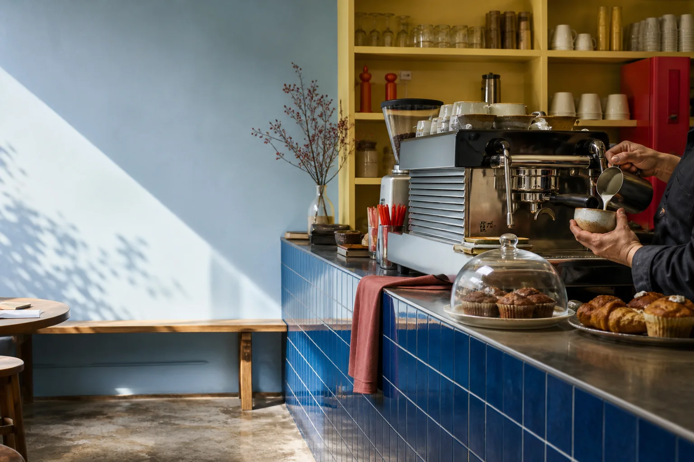
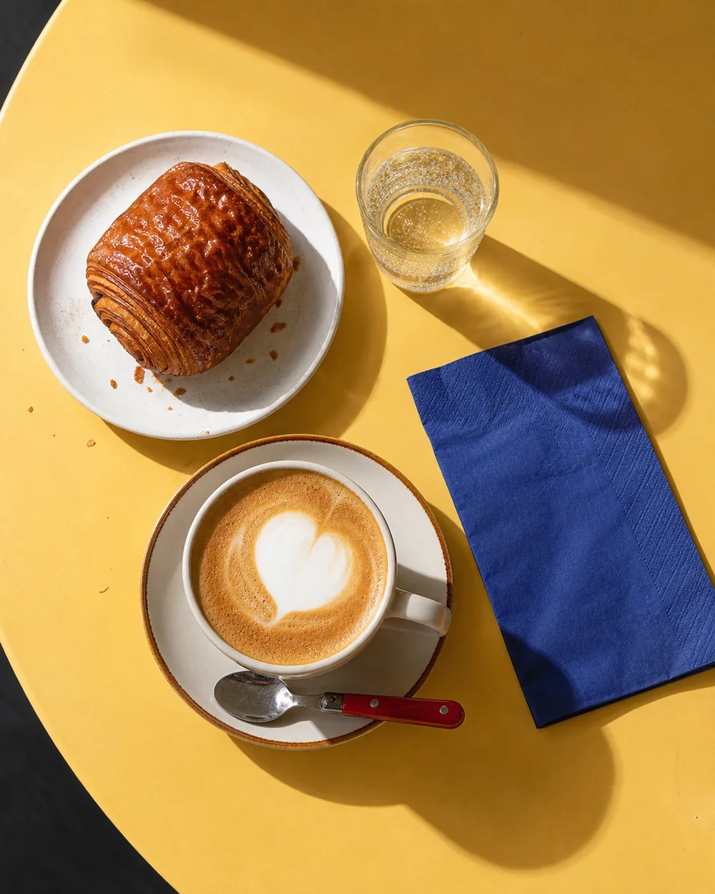

Городская кофейня · Ставрополь
Кофе, ради которого можно опоздать на пять минут.
Варим спокойно, печём утром и оставляем большой стол тем, кому сегодня нужно чуть больше времени.

по будням
08—22
Флэт уайт · 230 ₽
Булка с корицей · 210 ₽
Фильтр дня · 190 ₽
Завтрак до 15:00

завтрак, который не торопитНе только кофе
Место для коротких встреч и длинных мыслей.
У окна — столики на двоих. В центре — общий стол с розетками. Музыка не спорит с разговорами, а завтрак можно заказать до трёх.
- WI-FI Быстрый интернет и розетки
- DOG Можно с собакой
- 15:00 Завтраки до трёх
Столик ждёт
Скажите, когда вас ждать.
Оставьте контакты — администратор демо-кофейни подтвердит бронь.